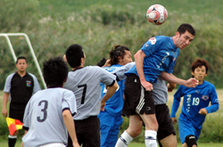
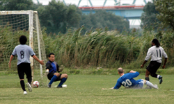
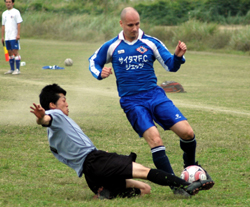

|
Misato, Sunday 13th September
Saitama Jets engaged in a well fought, well mannered game versus Division I newcomers, Zion FC. The game started with both teams struggling to fill their starting 11, with Zion starting with only 10 men. The Jets quickly turned to the attack (although most of them probably didn’t realize they were playing against an under-strength team) and had a few chances in the opening 10 minutes. Veteran Sasaki coolly converted a flick-on by newbie Andrew via the Delap like long throw of John “Wildebeest” Rayner. The positive start brought smiles to those who managed to turn up.
However, the confidence from our early goal quickly disappeared with the arrival of their 11th man, #11 Nixon Da Silva. No stranger to match reports and score lines, he ghosted past the scrambling defenders and slotted a goal home for Zion. The remainder of the first half saw both teams with numerous chances. Zion missed out on a glorious chance to go on top when 1st half keeper Randy Harada bravely cleared a loose ball after a corner.
Jets also had a strong penalty claim waved away by the referee after Shimizu was fouled in the area. Other than this no-call, the referee had a strong game, keeping order and making the right calls while being in the right place. A promising start to the season, two games in, and two quality officials.
The second half saw the Jets improve upon their organization. Players stopped wandering out of position, and for the most part everyone played it smart. The increased concentration didn’t prevent Da Silva from creating a great opportunity to put his team ahead. He broke swiftly after being sprung, one on one versus the keeper, but his shot was wide of the far post. This miss was to prove costly. Today’s Jets team showcased the strength of the club, as it was almost a 50/50 split of regular 1st and 2nd team players.
The Jets are lucky to have so many players to call upon, many who answered the call at the last minute. Zion demonstrated the opposite, as they suffered from fatigue playing with no subs. Giving up several corners in succession as time wound down, call-up Tomo “Ojisan” Kobayashi whipped in a corner and placed it in the near corner at the foot of the post. A tricky goal to score, but no problem for this crafty veteran as he put JETs ahead 2-1 with 10 minutes left.
The Jets finished strong and prevented Zion from equalizing. Overall, it was a good game for the Jets. Forward/keeper Fraser made some key grabs on high balls while keeping in the 2nd half, and Yasu put in some good blocks in defense. Big center back Rayner had a solid game, as did goal scorer Kobayashi. Randy was impressive in the outfield, hustling back and forth after starting in goal. New captain/vice-captain Hayashi and Osawa respectively, linked up effectively on the right side, with both creating numerous chances.
It was a good team effort to erase the sour taste of the last game’s loss. Zion FC have had a rude welcome to Division I, enduring two consecutive defeats. A good group of guys who played fairly and without the usual whinging associated with numerous TML teams. Perhaps with a few more quality players turning up, they will enjoy more success in their inaugural Division I season.
Report by El Toro
|

 |